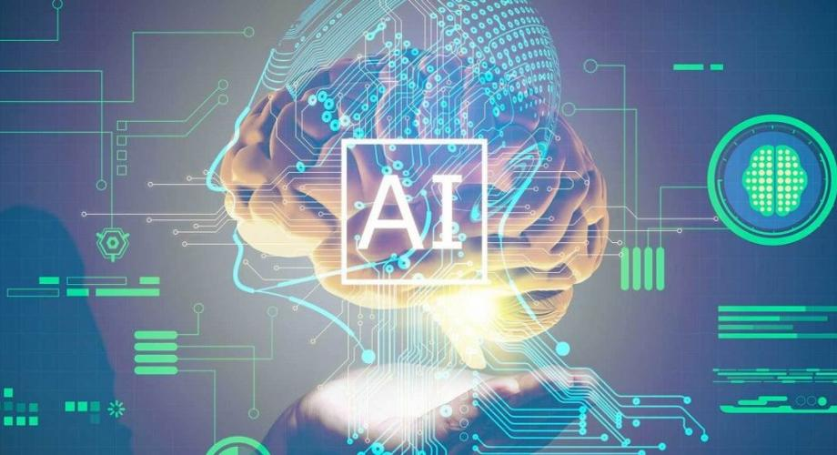
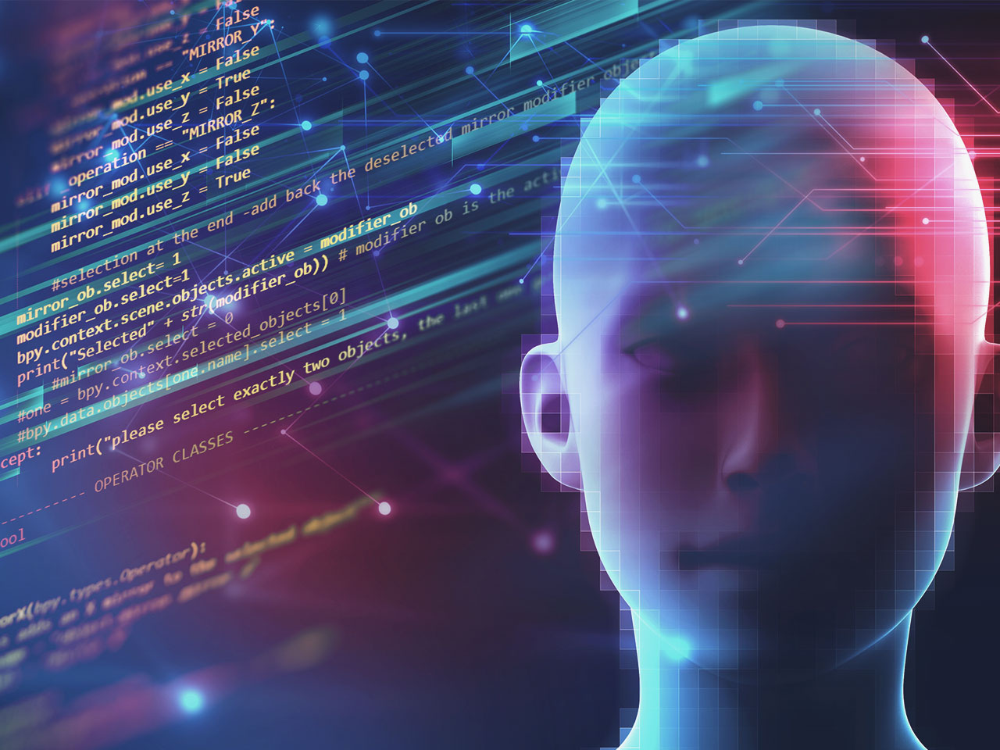
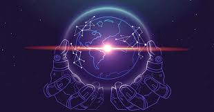
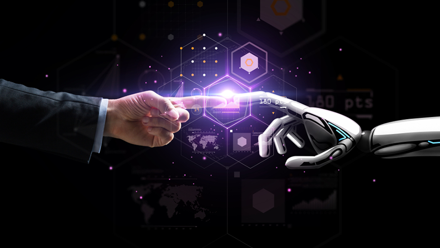

La inteligencia artificial es la revolución más importante de la tecnología desde que se inventó la informática. No existe una definición aceptada por todos los expertos de lo que significa dicha inteligencia ya que es una ciencia relativamente nueva, cambiante y experimental. Y porque ni siquiera podemos definir con exactitud qué es la inteligencia humana… En su forma más simple, la IA es el intento de imitar la inteligencia humana usando un robot, o un software; pero es un concepto muy vago, porque existen muchas ramificaciones.
A diferencia de lo que estamos acostumbrados a ver en las películas, los diferentes tipos de inteligencia artificial no son tan utópicas y ya están con nosotros. ¡No te preocupes, ningún robot se rebela contra la humanidad!
Realmente, esta tecnología solo nos ha ayudado a ejecutar los procesos más sofisticados, especialmente en Marketing Digital y mientras más sepamos sobre la inteligencia artificial, más podremos aprovecharla estratégicamente.
Los tipos de inteligencia artificial traen diferentes formas de intentar hacer que las máquinas piensen y actúen como humanos. A lo largo de la historia, esa idea fue vista como algo extremadamente futurista. Sin embargo, ya tenemos máquinas altamente capaces que se ejecutan en nuestras rutinas, aunque no lo sepamos.
Artificial Narrow Intelligence (ANI): ANI es un tipo de inteligencia artificial más inflexible, que no se amolda ni se adapta a los requisitos de un sistema o máquina en particular. Su función es centrarse en un trabajo único y dedicar toda su complejidad. Si trazamos un paralelo, sería un profesional capacitado que se dedica a una única función compleja. El funcionamiento del modelo ANI se proyecta a través de la programación de sus acciones. En esa etapa, debe estar preparada para actuar en un solo rol, reduciendo su desempeño tanto como sea posible.
Normalmente, ANI se utiliza en funciones como: asistentes virtuales (Siri, Alexa, Cortana, entre otros); reconocimiento facial; filtros de spam en correos electrónicos; sistemas de vehículos autónomos. y Entre sus características, ANI es una inteligencia artificial con carácter reactivo y memoria limitada. Además, por definición, todos los demás modelos pueden considerarse un tipo de ANI. Las clasificaciones técnicas ubican al ANI como una inteligencia incapaz de reproducir el comportamiento humano, solo simulándolo. Por eso, solo está orientado a objetivos específicos.
Inteligencia Artificial General (AGI): Entre los tipos de inteligencia artificial, AGI se considera fuerte y profunda, como una máquina capaz de imitar la inteligencia humana y con una vasta capacidad de acción. En su comportamiento, ella puede aprender y, con base en eso, replicar actitudes para resolver diferentes cuestiones. Eso es lo que la convierte en uno de los modelos más versátiles disponibles actualmente.
AGI tiene el papel de pensar, lo que conduce a una comprensión única y no completamente robótica. Así, para cada escenario con el que tiene que lidiar, la solución propuesta es diferente.Es muy común trabajar con máquinas que son capaces de replicar acciones humanas, lo que en sí mismo es muy beneficioso. Sin embargo, AGI es un sistema capaz de estudiar y comprender a los humanos y lidiar de manera precisa con las interacciones y los comportamientos de los usuarios.
Superinteligencia Artificial (ASI: es considerada la más poderosa, precisamente porque es la máquina capaz de volverse consciente y autónoma. Es decir, en lugar de simplemente replicar el comportamiento humano, ASI supera esa capacidad. Incluso se la considera capaz de pensar mejor y de ser más hábil que nosotros.Por supuesto, esa es una categoría de inteligencia artificial que aún está en desarrollo y mejora, aunque en un estado avanzado.
¡Este es el modelo que ha inspirado al cine a crear realidades en las que los robots tienen voluntad propia y simplemente dominan la Tierra! Por supuesto que eso no sucederá, pero la idea es que puedan ser inteligentes de la misma manera que se los retrata en las películas. La línea de desarrollo de ASI se esfuerza para que esos robots puedan ser mejores que los humanos en absolutamente todo. Las máquinas serán mejores atletas, científicos, artistas e incluso médicos. Realmente existe la posibilidad de pensar en eso porque es a un nivel científico que se enfoca en crear sistemas que despierten emociones y deseos propios.
La idea es que esa inteligencia artificial pueda comprender todas las emociones, tener las suyas y comprender cada detalle que pasa con quienes interactúan con ella. Por ambicioso que parezca, es innegable que ese es el camino que los científicos tienen como horizonte. Sin embargo, no es posible señalar en cuántos años la tecnología podrá alcanzar hasta ese nivel. También es indudable que esa es una etapa peligrosa en el avance de la inteligencia artificial. Las máquinas mayormente independientes tendrán un razonamiento que simplemente no se puede detener todo el tiempo. Por eso, queda mucho por hacer, aunque la autoconciencia ya es una idea clara entre los tipos de inteligencia artificial
La realidad actual de la tecnología permite que las máquinas actúen como seres humanos, lo que resulta de gran utilidad para las más diversas soluciones del mercado. Ese es el camino para que lleguen nuevos tipos de inteligencia artificial y cambien el mundo. No son pocas las empresas que apuestan por que 2022 sea el año de la Inteligencia Artificial (IA) por su papel clave en el aumento de la productividad y el crecimiento de las organizaciones. Analizamos, de mano de expertos de la industria, las principales tendencias al respecto.
Según un estudio llevado a cabo por Accenture, se estima que para 2035 aquellas compañías que incorporen la IA a su modelo de negocio verán un incremento de beneficios en torno al 38%, que no es poco. Eso habla de la importancia que tiene , y va a tener, la inteligencia artificial en el negocio de las empresas tanto en el presente como en los próximos años.